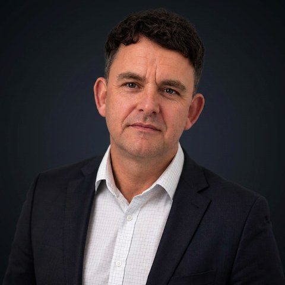
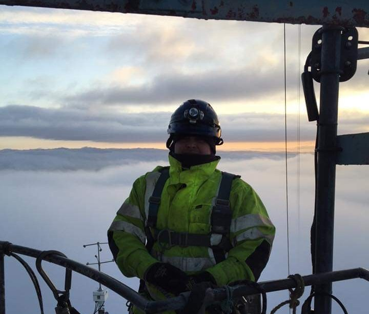

تخطيط المهمة وضوابطها
نراجع تسلسل العمل والواجهات وطرق الرفع والعمل على الارتفاعات، والكفاءة والإشراف اللذين تتطلبهما المهمة.
ما تستلمهطرق تنفيذ مراجعة، وخريطة مسؤوليات، وقائمة للضوابط الحرجة ضمن النطاق المتفق عليه.
أسينديرا Advisory · ممارسة حصرية · OHTL
ندعم التخطيط والإشراف وإعداد الفرق في الأعمال التي قد تكون عواقب الخطأ فيها جسيمة. تجمع الممارسة مراجعة طرق التنفيذ والتدريب العملي والتحقق من الجاهزية، مع خبرة متخصصة في خطوط النقل الهوائية من التخطيط حتى توصيل الطاقة.
فيلم الممارسة · العربية · 3:39
تعرّف على لي ستيفنسون وخدمات دعم مشاريع خطوط النقل: أساليب الإنشاء وكفاءة الفرق ووثائق العمل والتنفيذ في المملكة والأسواق الناشئة خارجها.
صوت ونص مصاحب بالعربية. يمكنك تشغيل النص المصاحب من أدوات المشغّل أو قراءة النص الكامل أدناه.
يقود لي ستيفنسون ممارسة خطوط نقل الكهرباء الهوائية في أسينديرا. وتمتد خبرته لأكثر من عشرين عاماً على الأبراج والشبكات. أمضى أربعة عشر عاماً في إنشاء الأبراج الشبكية الفولاذية، وتدرّج إلى قيادة فرق العمل، ثم انتقل إلى الصيانة والفحص والتدريب في الأكاديمية التقنية. وله خبرة في العمل في المملكة العربية السعودية وفي الأسواق الناشئة خارجها. وتشمل مؤهلاته المؤهل المهني الوطني في الدعم الهندسي لتقنية أنظمة الكهرباء، وتدريب سلامة إدارة المواقع، وتنسيق الأعمال المؤقتة. وتمنح هذه الخبرة عمقاً عملياً لأساليب الإنشاء وكفاءة الفرق وتنفيذ المشاريع.
يحتاج برنامج نقل الكهرباء إلى أكثر من تصميم. فهو يحتاج إلى أساليب وفرق وتسلسل عمل يمكن تطبيقها في الموقع. تقدّم أسينديرا خبرة متخصّصة في الخطوط الهوائية للأنظمة من فئة ثلاثة وثلاثين إلى سبعمئة وخمسة وستين كيلوفولت، من التخطيط المبكر إلى التنفيذ.
تستند الممارسة إلى عشرين عاماً من الخبرة في الأبراج والشبكات، تشمل قيادة الإنشاء والصيانة والفحص والتدريب الفني. وتتخصّص في التقنيات الحديثة للخطوط الهوائية: أساليب العمل وترتيبات الرفع والشدّ والمعدّات والتسلسل، مع تطبيقها إلى جانب فرق التنفيذ.
قبل التعبئة، نراجع قابلية التنفيذ والوصول والأعمال المؤقتة وتسلسل الأنشطة. وبالنسبة إلى مقاول الهندسة والتوريد والإنشاء، يعني ذلك فحص توافق الأسلوب المقترح مع العمل والمعدّات والكفاءات المتاحة. وتحدّد المراجعات الفنية وتقييمات القدرات المسائل المطلوب حسمها قبل التنفيذ.
يشمل الدعم تجميع الأبراج ونصبها، وأعمال الموصلات والأسلاك الأرضية، والتأريض والربط، والمعابر المتخصّصة، والتفكيك والفحص والاستكمال. وتساعد مساندة الهندسة وإدارة المشروع الفرق على تطبيق المنهج المتّفق عليه خلال الأنشطة المعقّدة وظروف الموقع المتغيّرة.
نطوّر برامج عملية لفنيّي الخطوط والمشرفين وفرق المقاولين، تشمل دعماً ممتدّاً في الموقع والانتقال إلى ممارسات العمل المحدّدة. ويوفّر تصميم مراكز التدريب والمناهج وأطر الكفاءة أساساً متّسقاً للتطوير. ويختبر التقييم القدرة مقابل العمل المطلوب تنفيذه.
يدعم كل نشاط طقم وثائق متكامل: دليل عمل، وتقييم مخاطر، وبيان طريقة التنفيذ، وإحاطة للفريق، ووحدة تدريب، وورقة نطاق. وتربط وثائق المشروع والأطر القابلة لإعادة الاستخدام المنهج الفني بالتعليمات والإحاطة والتنفيذ في الموقع.
ندعم أنظمة الموصلات المتقدّمة وتقنيات تقييم الأبراج وإدخال المنتجات والأساليب الجديدة. وتساعد شراكات تدريب المصنّعين ومساندة الاستخدام الأول في تهيئة الأفراد والوثائق. ويربط تمثيل العميل المتطلبات الفنية بالمقاولين والمورّدين ومصنّعي المعدّات.
يمكنكم اختيار الدعم الفني المستمر أو عند الحاجة، أو تطوير القدرات، أو التقييم والتحقيق، أو مساندة المشروع والموقع، أو الوثائق، أو التمثيل المتخصّص. ويحدّد كل تكليف المخرجات والأفراد والمواعيد ومتطلبات القبول. ونبدأ من التحدّي الفعلي في برنامج نقل الكهرباء لديكم.
اعرضوا علينا نطاق العمل ومرحلة التنفيذ والمسائل التي يحتاج فريقكم إلى حسمها. نحدّد الدعم المتخصّص والأسلوب العملي وما ستحتفظ به مؤسستكم. أسينديرا. خبرة في خطوط نقل الكهرباء الهوائية، تُطبّق إلى جانب فرق العمل.
الممارسة
يجمع تنفيذ الخطوط الهوائية بين المرتفعات، والطاقة المخزنة، والمعدات الثقيلة، والطقس، والخدمات اللوجستية، غالباً على بعد مئات الكيلومترات من أقرب مدينة. هامش الخطأ ضئيل، والفرق بين مشروع سلس ومشروع متعثر نادراً ما يكون في الهندسة. إنه في جودة التخطيط والإشراف وكفاءة الأطقم على الأرض. وهنا تعمل هذه الممارسة.
كل توصية تأتي من شخص نصب الأبراج ومد الموصلات وعمل في نوافذ الطقس بنفسه. عملية، وقابلة للتنفيذ، وصادقة بشأن ما ستفعله الأطقم فعلاً.
من تخطيط المسار والأساسات إلى مد الموصلات والتشغيل والتسليم، الشخص نفسه مساءل عبر كل مرحلة، فلا يضيع شيء بين المراحل.
التدريب والتقييم مدمجان في العمل، استناداً إلى عقدين قضاهما قائد الممارسة في تدريب الأطقم وبناء الأساليب التي تعمل بها، بما في ذلك تدريب مُكيّف قُدّم على مشاريع قائمة داخل المملكة. تنهي أطقمك المشروع أكثر قدرة مما بدأته.
ماذا تقدم
كل منها يعمل منفرداً أو يجتمع مع غيره في دعم كامل لدورة الحياة. كل مهمة تُحدد على الدليل ويقودها قائد الممارسة شخصياًً.
ما ننفذه معك
دعم عملي للأعمال فائقة الخطورة، يستند إلى خبرة خطوط النقل والرفع والعمل على الارتفاعات والطاقة المختزنة. يُحدد نطاق كل مهمة وفق نوع المخاطر والكفاءة المتخصصة المطلوبة، وتبقى صلاحية السماح بالعمل لدى الجهة المخوّلة.
نراجع تسلسل العمل والواجهات وطرق الرفع والعمل على الارتفاعات، والكفاءة والإشراف اللذين تتطلبهما المهمة.
ما تستلمهطرق تنفيذ مراجعة، وخريطة مسؤوليات، وقائمة للضوابط الحرجة ضمن النطاق المتفق عليه.
نستخدم الإحاطات والتمارين العملية لاختبار التواصل وطرح الاعتراضات وقرارات إيقاف العمل وجاهزية الإنقاذ قبل بدء التعرض للمخاطر.
ما تستلمهمواد للإحاطات والتمارين، وملاحظات عن الكفاءة، وقائمة واضحة بفجوات الجاهزية.
نعمل مع المشرفين والفرق للتحقق من الضوابط المتفق عليها وتوثيق تغير الظروف ومتابعة الإجراءات حتى يراجعها الشخص المسؤول المخوّل.
ما تستلمهملاحظات ميدانية، وسجلات جاهزية، وإجراءات موثقة للتسليم والتعلم.


قائد الممارسة · شراكة حصرية
أمضى لي ستيفنسون أكثر من عقدين في خطوط النقل الهوائية، من العمل بالأدوات إلى قاعات الإدارة. تعلّم المهنة فوق الأبراج في المملكة المتحدة، ينصب الهياكل الفولاذية ويمد الموصلات في كل طقس يمكن أن تلقيه عليه المهنة، ثم مضى ليقود الأطقم ويقدم المشورة في مشاريع قائمة عبر جميع أنظمة الجهد العالي الرئيسية، من 132 إلى 500 كيلوفولت.
وهو المؤسس والمدير الإداري والمستشار التقني لشركة Innovecta Ltd، الاستشارية البريطانية المتخصصة في خطوط النقل الهوائية والتي يمتد عملها عبر المملكة المتحدة وإيرلندا وأوروبا والشرق الأوسط وآسيا الوسطى. ومن خلال Innovecta يدعم شركات المرافق والمطورين ومقاولي EPC بمراجعات قابلية التنفيذ، ودعم التنفيذ، وتقييم المقاولين، والتحقيق في الحوادث، والتدريب. وتضم مكتبته الفنية في Innovecta أكثر من 455 وثيقة ميدانية مجرّبة في خطوط النقل الهوائية: أدلة عمل، وتقييمات مخاطر، وخطط أساليب العمل، وموجزات يومية، ووحدات تدريبية، مكتوبة من الخبرة لا من النظرية.
يعرف لي هذه السوق معرفة مباشرة. فدعمه الأخير للتنفيذ وتدريبه للمقاولين شمل مشاريع كبرى لنقل الجهد العالي داخل المملكة، حيث سار على المسارات، وراجع الأساليب، ودرّب الأطقم التي تبنيها.
يعمل لي مع أسينديرا بموجب شراكة حصرية. في المملكة، لا يعمل إلا مع عملائنا، في مهماتنا، ويقودها شخصياًً. وحين يخبرك كيف ستتصرف الأطقم فوق برج، فلأنه كان هو نفسه في تلك الأطقم.
مشورة من شخص أدى العمل بنفسه، على المرتفعات، على أرض الواقع.
كيف تسير المهمة
برنامجك، وتصاميمك، وخطط أساليب العمل لديك، وتاريخ الحوادث، تُقرأ قبل أي توصية. الطريق يأتي من مشروعك، لا من قالب.
نسعّر على القيمة ونحدد النطاق على ما يُظهره الدليل. إن كانت مرحلة واحدة تحتاج الاهتمام، نقول ذلك. وإن كان الخطر نظامياً، ترى السبب بالضبط.
يعمل قائد الممارسة جنباً إلى جنب مع فرقك في الميدان، لا من مكتب بعيد. تنتقل القدرة من طاقم إلى طاقم، بالطريقة التي لطالما عُلّمت بها المهنة.
ابدأ محادثة
أخبرنا عن خطك وجدولك الزمني وأطقمك. سيرد عليك قائد الممارسة شخصياًً.